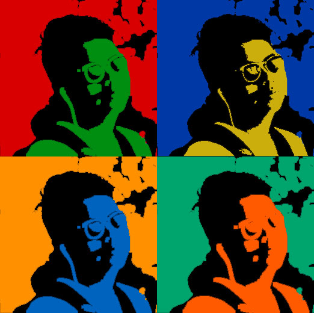
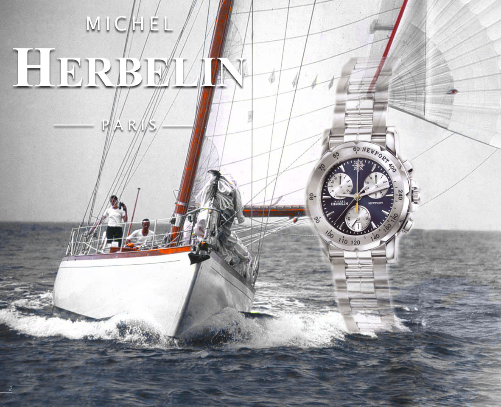
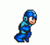
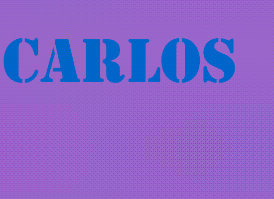

GALLERY
My Work


I made this for my final grade in my AME class.

I made this in class because we were learning about art forms.

This was made to replicate a watch add.

This is the first GIF i made in my AME class.

This GIF was inspired by a brand named palace skateboards, i chose this because im really into streetwear and Palace is a dope brand.

. This is 1 of the 3 GIFs i made but this was my favorite. This GIF was created by me because of my love of A Tribe Called Quest.It took about 16 frames to complete which was pretty easy.
